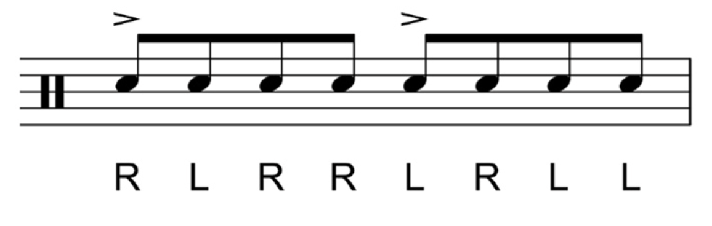

El paradiddle es uno de los 26 rudimentos clásicos de batería. Consiste en una secuencia de golpes que combina movimientos simples y dobles entre ambas manos:
Right - Left - Right - Right / Left - Right - Left - Left
Este ejercicio ayuda a mejorar la coordinación, velocidad y control al tocar batería.